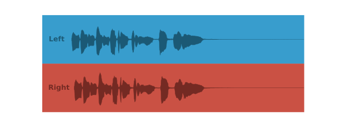

waveform()¶
- audplot.waveform(x, *, text=None, color='#E13B41', background='#FFFFFF00', linewidth=1.5, ylim=(-1, 1), ax=None)[source]¶
Plot waveform of a mono signal.
Shows only the outline of a time signal without showing any axis or values.
- Parameters
x (
ndarray) – array with signal valuestext (
Optional[str]) – optional text to be displayed on the left side of the waveformcolor (
Union[str,Sequence[float]]) – color of wave form and textbackground (
Union[str,Sequence[float]]) – color of backgroundlinewidth (
float) – line width of signalax (
Optional[Axes]) – pre-existing axes for the plot. Otherwise, callsmatplotlib.pyplot.gca()internally
- Raises
RuntimeError – if signal has more than one channel
Examples
>>> import librosa >>> x, _ = librosa.load(librosa.ex('trumpet')) >>> waveform(x, text='Trumpet')
>>> import librosa >>> x, _ = librosa.load(librosa.ex('trumpet')) >>> waveform(x, background='#363636', color='#f6f6f6')
>>> import librosa >>> import matplotlib.pyplot as plt >>> x, _ = librosa.load(librosa.ex('trumpet', hq=True), mono=False) >>> _, axs = plt.subplots(2, figsize=(8, 3)) >>> plt.subplots_adjust(hspace=0) >>> waveform( ... x[0, :], ... text='Left ', # empty space for same size as 'Right' ... linewidth=0.5, ... background='#389DCD', ... color='#1B5975', ... ax=axs[0], ... ) >>> waveform( ... x[1, :], ... text='Right', ... linewidth=0.5, ... background='#CA5144', ... color='#742A23', ... ax=axs[1], ... )
